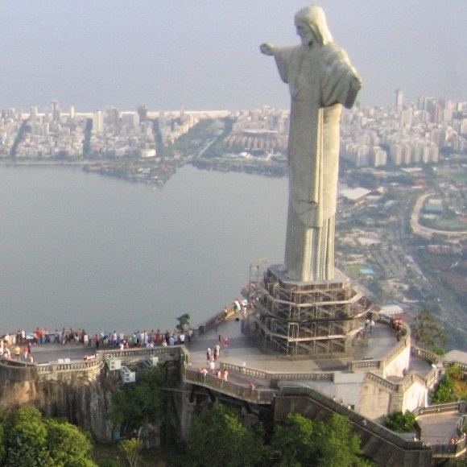
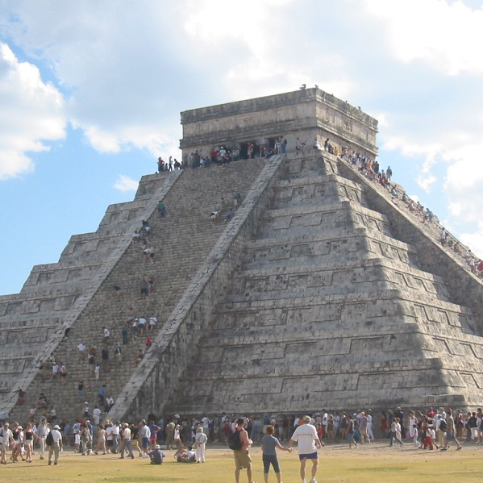
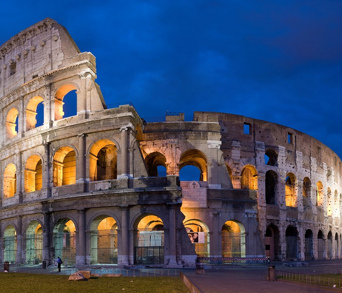
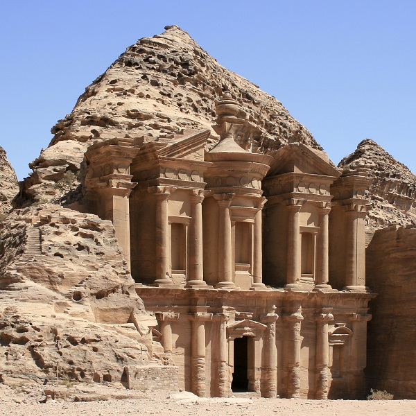
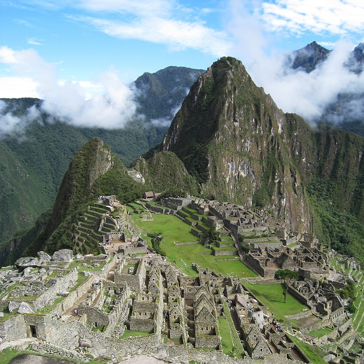

Cristo redentor, Brasil

Chichén Itzá, Mexico

Colosseum, Italy

Monastery Petra, Jordan

Great Wall of China, China

Machu Picchu, Peru

The New Seven Wonders of the World
New7Wonders of the World (2000–2007) was an initiative started in 2000 as a Millennium project to choose Wonders of the World from a selection of 200 existing monuments.
The New7Wonders Foundation claimed that more than 100 million votes were cast through the Internet or by telephone. The voting via Internet was limited to one vote for seven monuments per person/identity, via telephone multiple voting was possible, so the poll was considered not scientific.